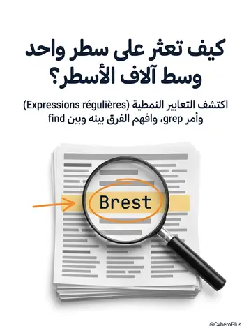
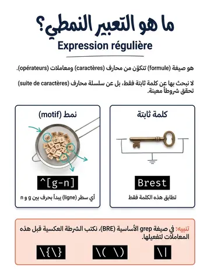
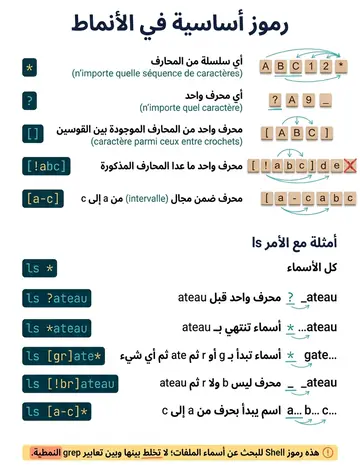
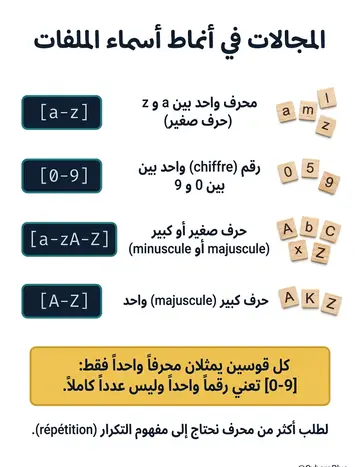
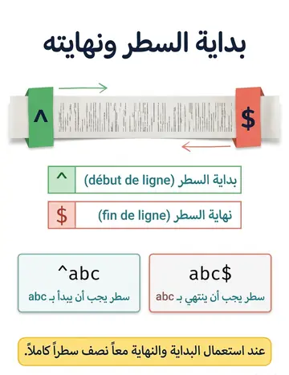
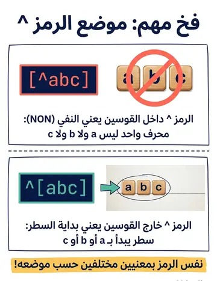
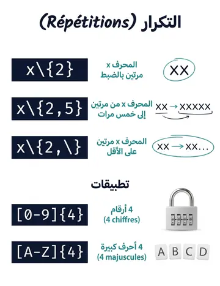
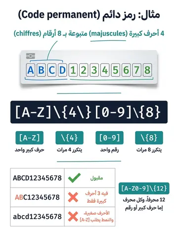
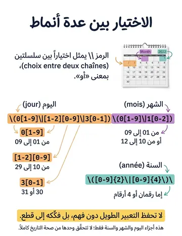
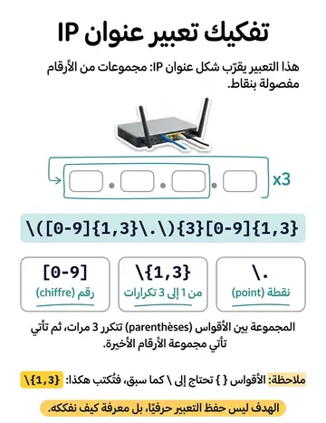

Expressions régulières
التعابير النمطية
الشرح بالعربية
التعبير النمطي نمط يصف سلاسل محارف: . أي محرف، * صفر أو أكثر من المحرف السابق، + واحد أو أكثر، ? اختياري، ^ بداية السطر، $ نهايته، [abc] أحد المحارف، [a-z] نطاق، [^..] نفي، {n,m} تكرار، | بديل، () تجميع، \ هروب. لا تخلطها مع wildcards القشرة: هناك * تعني أي سلسلة أسماء، وهنا تعني تكرار المحرف السابق.
Illustrations de la leçon
10 planches · cliquez pour agrandir









Contenu du cours
Pages 158–165 · texte intégral du support
LES FILTRES
DE RECHERCHE
Définition : Formule qui représente une chaîne de caractères.
Composée de caractères et d'opérateurs.
Utilisation : On recherche alors non pas un mot ou une simple chaîne de caractères mais une suite de caractères qui correspondent au critères énoncés par la formule.
Certains opérateurs doivent être précédés d'un \ pour ne pas
entrer en conflit avec le shell, ainsi :
{ , } , ESPACE , ( , ) et | seront écrits \{ , \} , \ , \( , \) et \|.
LES EXPRESSIONS RÉGULIÈRES
Rappel :
* : N’importe quelle séquence de caractères.
?
: N’importe quel caractère.
[]
: N’importe quel caractère choisi dans les caractères donnés entre crochets.
[^] : n’importe quel caractère sauf ceux dans les caractères donnés entre crochets.
[−] : n’importe quel caractère dans la plage de caractères donnés entre crochets.
Exemples :
$ ls *$ ls ?ateau$ ls *ateau$ ls [gr]ate*$ ls [^br]ateau$ ls [a-c]*LES EXPRESSIONS RÉGULIÈRES
LES EXPRESSIONS RÉGULIÈRES
Les expressions régulières sont aussi des suites de caractères permettant de faire des sélections.
Les différentes expressions régulières sont :
LES EXPRESSIONS RÉGULIÈRES
Représentation :
Un caractère compris entre 'a' et 'z' : [a-z]
Un caractère compris entre '0' et '9' : [0-9]
Le début d'une ligne : ^
La fin d'une ligne : $
Un choix entre deux chaînes : \ |
Caractère compris entre 'a' et 'z' ou 'A' et 'Z' : [a-zA-Z]
Répétitions d'une occurrence
Exactement 2 répétitions de 'x' : x\{2\}
Entre 2 et 5 répétitions de 'x' : x\{2, 5\}
Au moins 2 répétitions de 'x' : x\{2, \}
LES EXPRESSIONS RÉGULIÈRES
Exemple :
L'expression [a-z][a-z] * cherche les lignes contenant au minimum un caractère en minuscule.
[a-z] caractère permis, [a-z]* recherche d'occurrence des lettres permises.
L'expression ^[0-9] \{ 4 \}$ a pour signification, du début à la fin du fichier $, recherche les nombres [0-9] de 4 chiffres \ {4\} .
Remarque :
Le caractère ^ n'a la signification de non qu'entre crochets.
Quelle est la différence entre [^abc] et ^[abc] ?
LES EXPRESSIONS RÉGULIÈRES
Exemple :
[02-57]
0, 2, 3, 4, 5 ou 7
[a-d5-8X-Z] a, b, c, d, 5, 6, 7, 8, X, Y ou Z
[0-5-]
0, 1, 2, 3, 4, 5 ou –
[^0-9] pas un chiffre
Un code permanent contient 4 majuscules suivies de 8 chiffres :
[A-Z]\{4\}[0-9]\{8\}
Un code permanent contient 12 caractères lettres ou chiffres :
[A-Z0-9]\{12\}
LES EXPRESSIONS RÉGULIÈRES
Exemple plus avancé:
Repérer les lignes contenant une date qui est exprimée par JJ/MM/AAou bien JJ/MM/AAAA
Jours 01 à 09 : 0[1-9]
Jours 10 à 29 : [1-2][0-9]
Jours 30 et 31: 3[0-1]
On obtient alors :
\(0[1-9]\|[1-2][0-9]\|3[0-1]\)
Mois 01 à 09 : 0[1-9]
Mois 10 à 12 : 1[0-2]
On obtient alors :
\(0[1-9]\|1[0-2]\)
Une année contient simplement 2 ou 4 chiffres :
\([0-9]\{2\}\|[0-9]\{4\}\)
Concaténation des expressions formalisant les jours, mois et années avec un '/' entre elles :
\(0[1-9]\|[1-2][0-9]\|3[0-1]\)/\(0[1-9]\|1[0-2]\)/\([0- 9]\{2\}\|[0-9]\{4\}\)